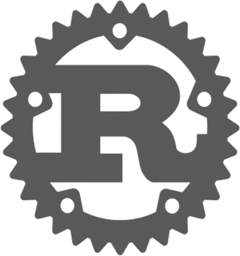

About Me
I build systems that actually get used - from contactless payment platforms running on Raspberry Pi devices to full-stack applications and embedded integrations.
I’ve shipped production systems using React, Rust, JavaScript, Python, and PHP, with a strong focus on performance, reliability, and clean architecture.
I use Linux as my daily driver and tend to gravitate towards React on the frontend, and Rust for backend and hardware-focused work.
I spend time understanding fundamentals like memory management, data structures, and algorithms, but I also care deeply about writing clean, maintainable code that lasts.
Tech Stack
 JavaScript
JavaScript
Rust React
React SQL
SQL Express.js
Express.jsMy Projects
A touchscreen ordering system built for vending machines and smart fridges. Talks to multiple hardware devices and contactless payment terminals, then dispenses items automatically. A small Rust server runs locally for managers to edit products from any browser. Payment, dispensing, and product refresh are all automated with OTA updates.
A code editor built with Rust's Tauri framework and React. Runs smoother than VSCode with far less resource usage, even on a Raspberry Pi. Includes hotkeys to launch a custom file explorer or a terminal in the active directory.
Developed a smart weighing system using an Arduino and HX711 load cell amplifier. Enabled real-time weight and positional tracking for integration with a React Native smart fridge app via USB serial communication. Charges users based on the weight and position of products removed in real time.
A local frontend UI backed by a FastAPI server to communicate with a locally running LLM via Ollama. Features chat history with local storage, Redux state management, and real-time message streaming.
Built a database-backed HTTP server in C from scratch, returning JSON output, handling requests, and connecting to a frontend without any frameworks.
Full-stack collaborative web app where users create and manage serialized stories with chapters, review others work, and authenticate via JWT and cookie-based sessions. Features dynamic search and user profiles.
A simple and sleek landing page for a restaurant.
Full CRUD management system built in C# with SQL Express. Features robust data validation and full database operation coverage.
A simple To-Do app for personal use.
(yes, a calculator)